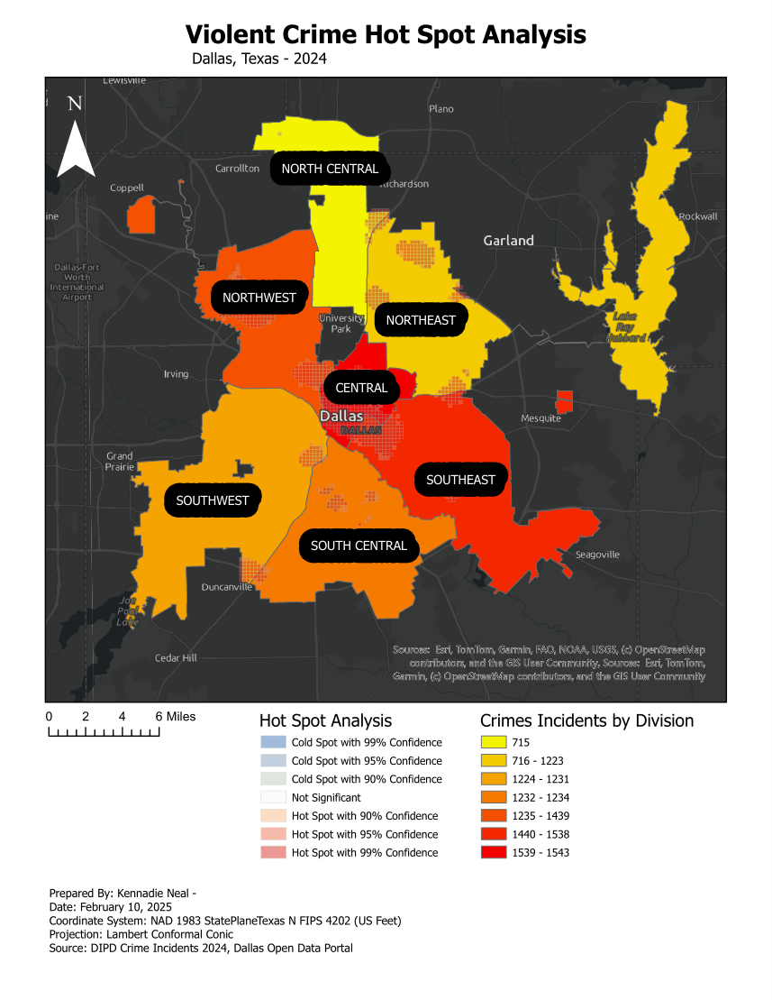

Hot Spot Analysis
Dallas Violent Crime Hot Spot Analysis
Mapped 2024 Dallas violent crime incidents by division and identified statistically significant hot and cold spots to support public safety pattern recognition.
Tools Used: ArcGIS Pro • Hot Spot Analysis • Spatial Statistics • Cartography
What I Learned: Improved my understanding of spatial statistics and how GIS can reveal meaningful crime patterns.
View Full Project →